Best Monospaced Fonts
For Coding
Common choices are way too boring to you?
Almost every single programmer is familiar with Consolas, Courier New, Trebuchet MS, Ubuntu Mono, Andale Mono, Monaco, etc. Those famous fonts are too common, way too mainstream, very default and undoubtedly boring.
Out-of-the-box, alternative fonts
In general, software developers don't too worry about what fonts they are using. But if you are different and feel a bit upset when your IDE looks too boring and realize that you will need to find new fonts for your IDE which is free or affordable, scroll down below.
Input Mono
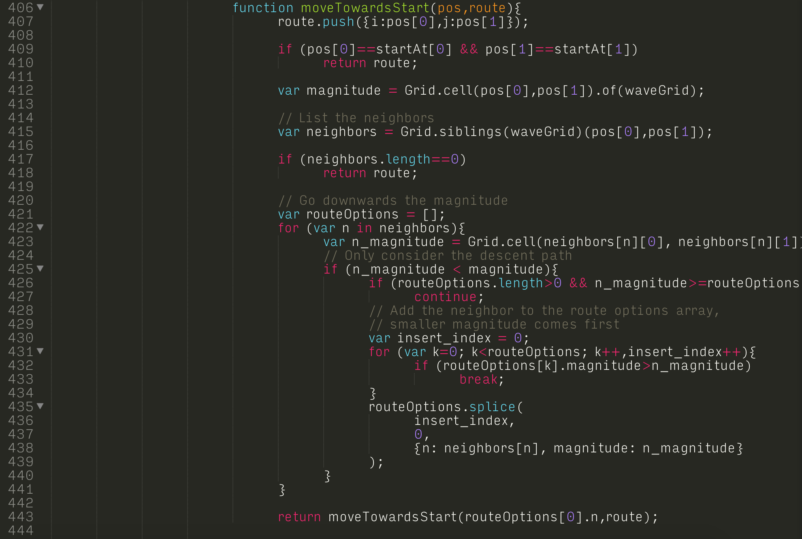
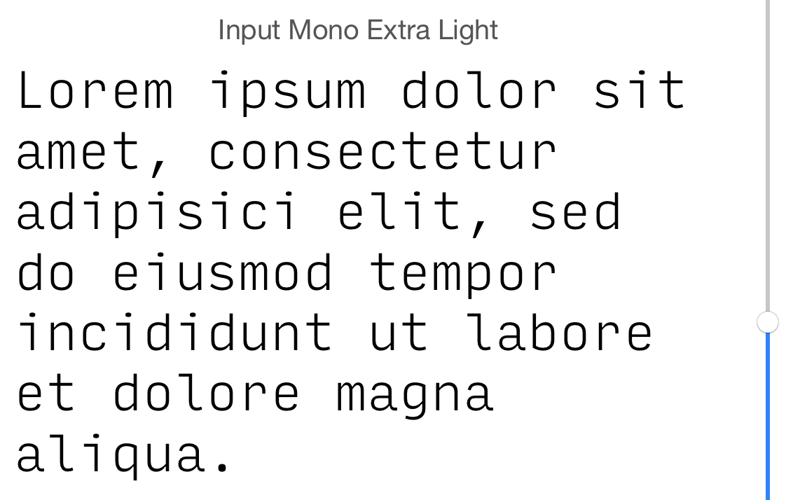
Input Mono is one of the sexiest font above ground.
Audimat Mono
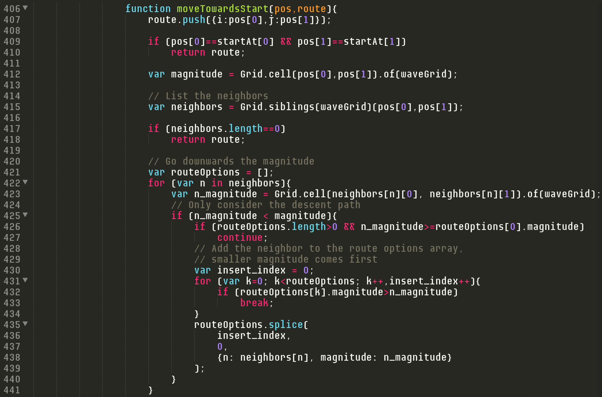
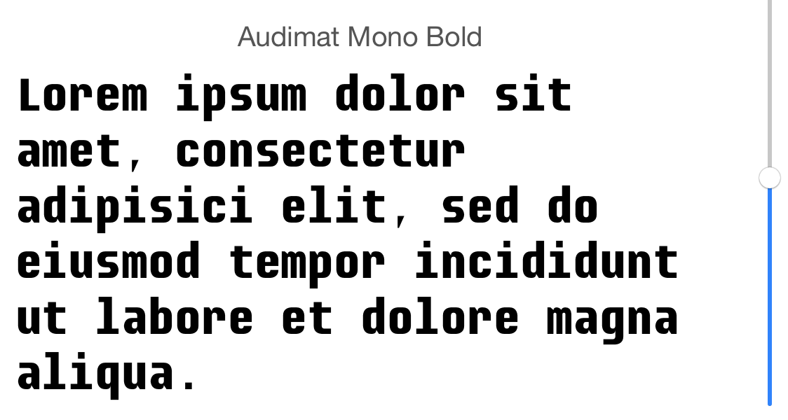
Audimat Mono is a great choice for bold alphabet lovers.
M+ 1mn
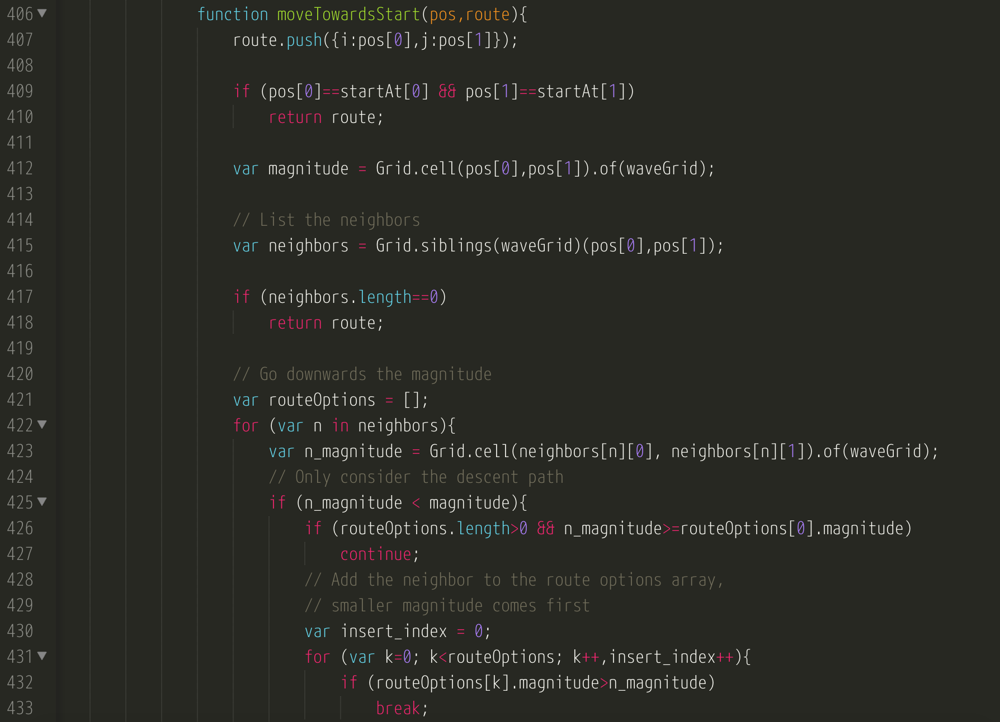
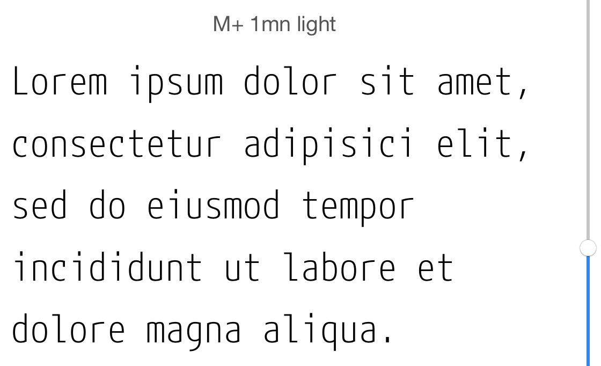
M+ family is too good to turn away.
Oxygen Mono
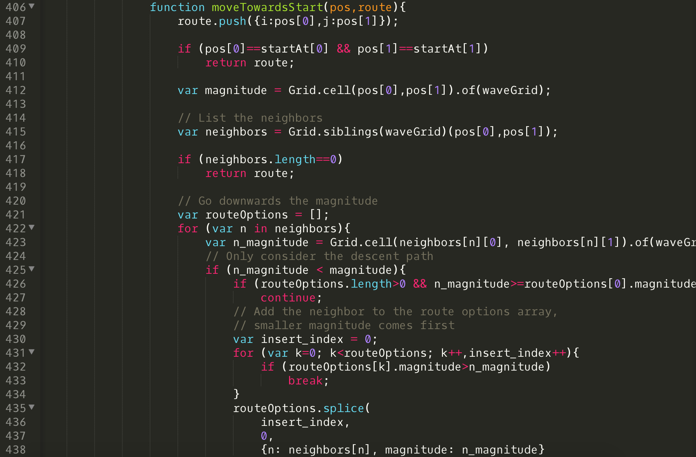
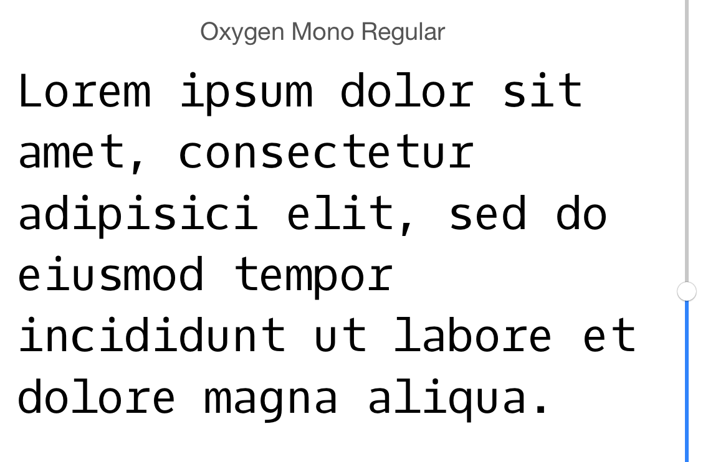
Oxygen Mono is pretty well known and it looks nice.
PT Mono
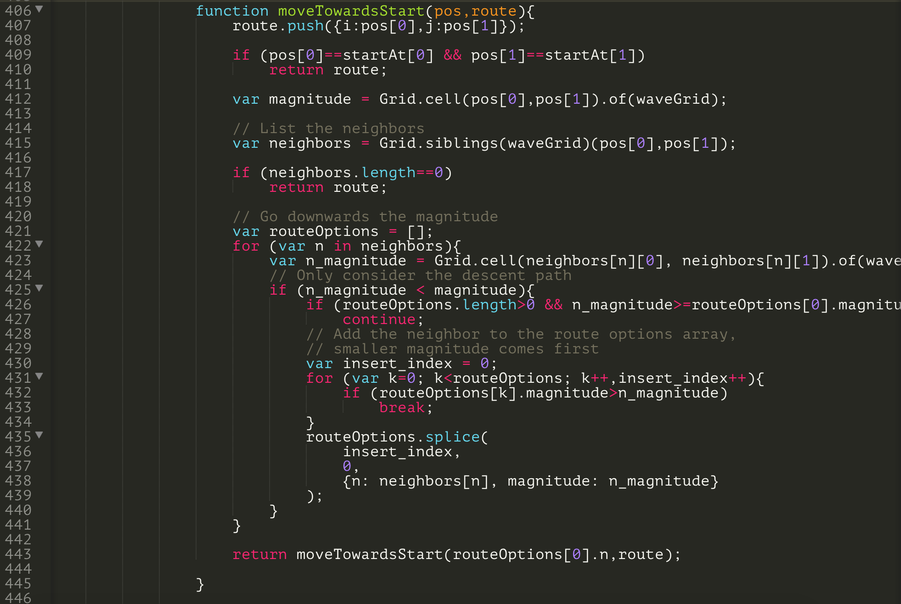
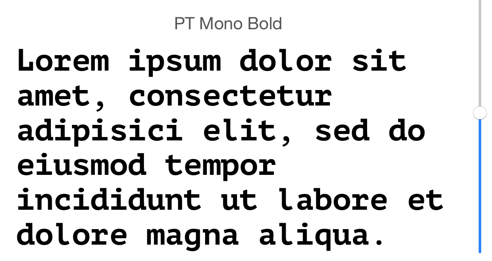
PT Mono brings sleek look and feel to your code.
Envy Code R VS
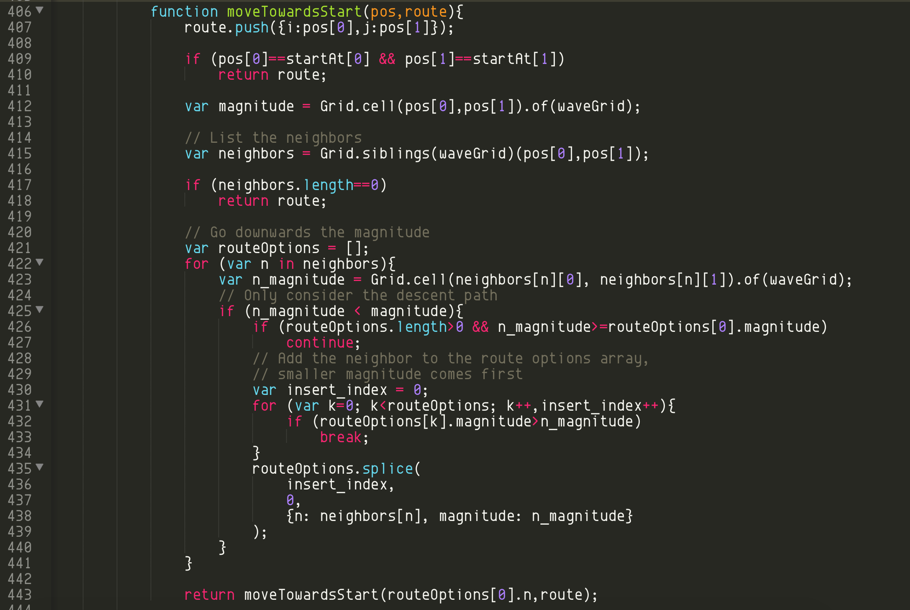
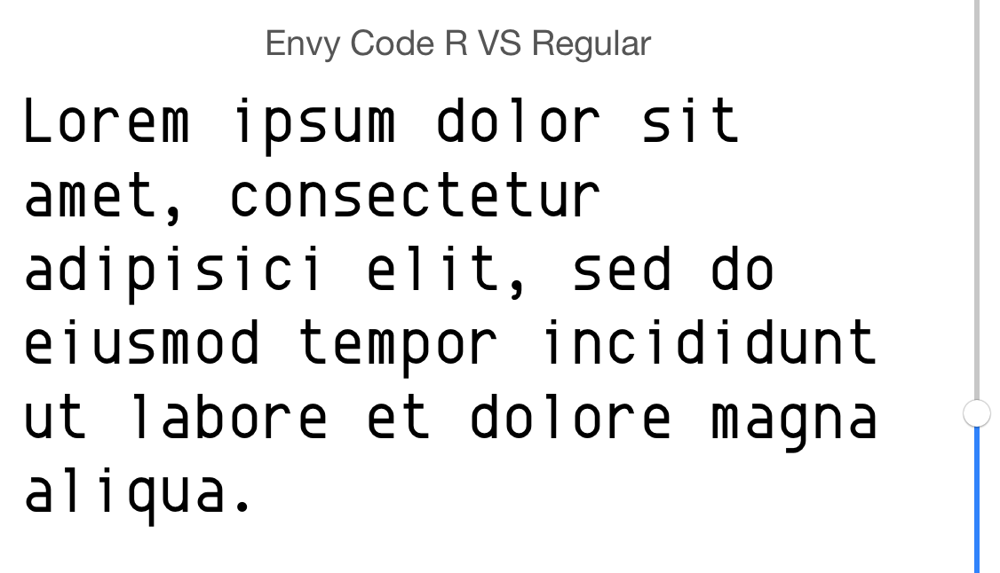
Envy Code R VS appears in a strong, firm, and powerful look.
Personally, I usually rotate IDE fonts when it gets boring
Softer fonts seem to be a good stress relief during an extensive day of coding. Meanwhile, fonts which look more solid and bold tend to ignite more energy.
Don't trust me. But Consolas is too boring.